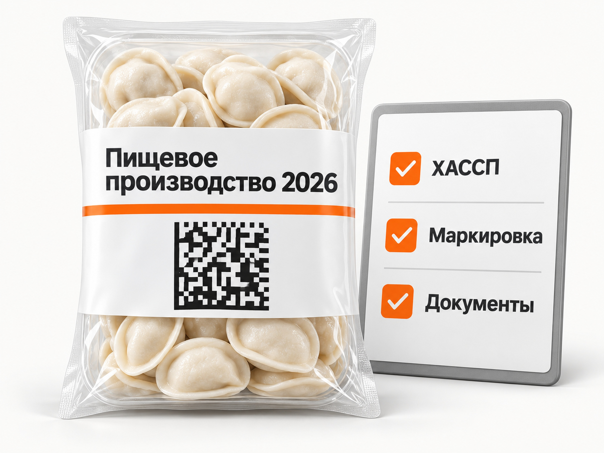

Блог о платном трафике
Продвижение франшиз производства продуктов питания и напитков в 2026 году: инструкция и прогноз
Под франшизами продуктов питания и напитков в этой статье я понимаю именно производственные франшизы.
То есть предприниматель покупает модель, по которой в своём регионе запускает цех или небольшое производство: получает технологию, рецептуры, требования к помещению, оборудование или его спецификацию, обучение, документы, поставщиков сырья и систему сбыта.
Это могут быть франшизы производства полуфабрикатов, готовой еды, кондитерских изделий, ингредиентов для HoReCa, пищевого льда, безалкогольных напитков и другой пищевой продукции.
Кофейни, рестораны, пекарни как точки общепита и продуктовые магазины я сюда не отношу. У них другая экономика и другой процесс запуска.
С рекламной точки зрения это достаточно узкая ниша. Прямого спроса меньше, чем у массовых франшиз, зато покупатель обычно рассматривает полноценный бизнес с инвестициями от нескольких сотен тысяч до миллионов рублей. Поэтому считать здесь нужно не дешёвые заявки, а всю цепочку:
реклама -> заявка -> квалифицированный инвестор -> переговоры -> договор -> запуск производства
Что происходит на рынке производственных франшиз в 2026 году
Российский рынок франшиз сейчас нельзя назвать простым.
По данным Businessmens.ru, в I квартале 2026 года общий спрос на франшизы снизился на 28,4% год к году. При этом производство оказалось одним из немногих направлений с положительной динамикой: количество заявок на производственные франшизы выросло на 15,6%.
Данные БИБОСС также показывают, что по итогам 2025 года производство занимало около 6,99% общего спроса на франшизы и находилось на седьмом месте среди основных категорий.
При этом сам франчайзинговый рынок стал осторожнее. Роспатент сообщил, что в 2025 году было заключено более 7800 договоров коммерческой концессии против 8206 годом ранее.
То есть покупателей стало сложнее убеждать просто красивой презентацией и обещанием окупаемости. Для производственной франшизы это особенно заметно, потому что потенциальный партнёр должен вложиться не только в паушальный взнос, но и в оборудование, помещение, сырьё и оборотный капитал.
Какие производственные франшизы реально представлены на рынке
Ниша не выдуманная, но она действительно значительно уже общепита и торговли.
Например, в актуальных каталогах 2026 года представлены производственные модели PieOkmy, «Лёд CRYSTAL» и ESSENCE.
PieOkmy предлагает запуск кулинарного цеха по выпуску готовой продукции и полуфабрикатов. На собственном сайте франшизы заявлены форматы производства от нескольких сотен единиц продукции в день, передача технологических карт, обучение технолога, подбор оборудования и помощь с поиском помещения.
По данным актуальной карточки франшизы, инвестиции начинаются примерно от 1,2 млн рублей. Модель рассчитана преимущественно на B2B-сбыт в продуктовые магазины, общепит и кейтеринговые компании.
«Лёд CRYSTAL» представляет франшизу локального производства пищевого льда. Заявленные инвестиции начинаются примерно от 2 млн рублей, а клиентами производства являются бары, рестораны и магазины. Франчайзер также заявляет помощь с сертификацией продукции.
ESSENCE предлагает более капиталоёмкую модель производства ингредиентов для напитков и блюд с инвестициями от 10 млн рублей.
Цифры доходности и окупаемости этих проектов являются данными самих франчайзеров и каталогов, а не независимой статистикой. Но разброс инвестиций хорошо показывает главную особенность ниши: под формулировкой «франшиза производства продуктов питания» могут находиться совершенно разные по масштабу предприятия.
Что на самом деле покупает франчайзи
В производственной франшизе бренд часто менее важен, чем в ресторане или розничной сети.
Предприниматель в первую очередь покупает сокращение пути от идеи до работающего производства.
Ему нужны понятная технология, спецификация оборудования, рецептуры, требования к помещению, поставщики сырья, обучение персонала, документация, контроль качества и система продаж готовой продукции.
Особенно важен последний пункт.
Можно идеально настроить линию и выпускать качественный продукт, но без загрузки производства бизнес не работает.
Поэтому один из центральных вопросов потенциального франчайзи звучит не «как это производится?», а:
кому я буду это продавать после запуска?
Например, производственный цех PieOkmy прямо строит модель вокруг продаж магазинам, точкам общепита, кейтерингу и другим B2B-клиентам. «Лёд CRYSTAL» ориентируется на бары, рестораны и торговые точки. Производство ингредиентов ESSENCE также построено вокруг B2B-сбыта.
Поэтому сильная производственная франшиза должна продавать две системы одновременно:
как производить + как продавать произведённое.

В 2026 году документы и маркировка стали ещё важнее
Для пищевого производства недостаточно установить оборудование и получить рецептуру.
ТР ТС 021/2011 «О безопасности пищевой продукции» обязывает изготовителей разрабатывать, внедрять и поддерживать процедуры, основанные на принципах ХАССП.
Одновременно расширяется обязательная маркировка.
С 1 марта 2026 года для безалкогольных напитков действует поэкземплярная прослеживаемость маркированной продукции.
Для сладостей и кондитерских изделий обязательная маркировка вводилась в 2026 году этапами с 1 марта, 1 мая и 1 июля в зависимости от вида продукции.
С 1 сентября 2026 года для ряда видов бакалейной продукции начался новый этап учёта оборота маркированной продукции с использованием ЭДО.
Это напрямую влияет на упаковку самой франшизы.
Формулировка «дадим рецептуру и список оборудования» уже выглядит слабее предложения:
«Поможем запустить производство с технологией, оборудованием, ХАССП, маркировкой, документацией и системой сбыта».
Для покупателя это конкретное снижение сложности запуска бизнеса.

Какой оффер использовать в рекламе производственной франшизы
Я бы не начинал объявление с абстрактных обещаний вроде «прибыльный бизнес» или «готовая франшиза».
Человек должен сразу понять, что именно он будет производить.
Например:
«Производство пищевого льда по франшизе. Запуск цеха в вашем регионе»
или:
«Франшиза производства полуфабрикатов. Технология, оборудование и система B2B-продаж»
Конкретный продукт здесь работает как фильтр.
Яндекс прямо требует указывать способ заработка и запрещает гарантировать прибыль, успешность сделки, быстрое обогащение или отсутствие риска. Поэтому обещания типа «гарантированный доход 500 000 ₽ в месяц» использовать в рекламе нельзя.
Если у франчайзера есть реальные показатели действующих производств, их можно показывать аккуратно:
«выручка действующего производства»,
«результаты партнёра в городе N»,
«расчёт финансовой модели для вашего региона».
Это лучше, чем обещать такой же результат каждому покупателю.
Как должен выглядеть сайт франшизы
Обычной презентации франшизы для этой ниши недостаточно.
Человек фактически выбирает производственный проект, поэтому на странице нужно показать сам бизнес изнутри.
Я бы обязательно раскрыл продукт, формат производства, необходимую площадь, требования к помещению, оборудование, производительность линии, персонал, сырьё, себестоимость, потенциальные каналы продаж, этапы запуска, необходимые документы и реальные действующие производства.
Хорошо работают фотографии и видео оборудования в работе.
Особенно полезно показать полный путь продукта:
сырьё -> производство -> упаковка -> готовая продукция -> клиент
Отдельным блоком нужно объяснить, как франчайзер помогает со сбытом.
Если после запуска партнёр должен самостоятельно ходить по магазинам и искать клиентов, это лучше написать прямо. Если сеть предоставляет заявки, дилерскую систему, федеральных клиентов или готовую методику B2B-продаж, это уже серьёзное преимущество.
Форма заявки тоже должна выполнять функцию первичной квалификации.
Кроме телефона я бы спрашивал город, доступный бюджет, срок запуска и иногда наличие помещения или предпринимательского опыта.
Для дорогой производственной франшизы количество заполненных форм менее важно, чем их качество.
Яндекс Директ для производственной франшизы
Я бы начинал с Поиска.
Здесь можно получить людей, которые уже ищут именно производственный бизнес.
Например, семантика может строиться вокруг запросов «франшиза производства продуктов питания», «пищевое производство франшиза», «франшиза производства полуфабрикатов», «франшиза производства напитков», «мини производство продуктов франшиза», «франшиза пищевого производства», «готовое производство по франшизе».
Отдельно я бы вынес более широкие запросы вроде «производственная франшиза», «бизнес производство продуктов питания», «какое производство открыть», «мини завод франшиза».
Это уже другой уровень спроса, и смешивать его с горячими запросами не стоит.
Узкие запросы показывают сформированный интерес к конкретной модели. Широкие требуют сначала убедить человека выбрать именно пищевое производство.
Для самой логики рекламы производственных компаний полезна отдельная статья «Яндекс Директ для производства: как получать B2B-заявки».
РСЯ нужна из-за небольшого прямого спроса
Одна из проблем производственных франшиз - ограниченное количество прямых запросов.
Поэтому после Поиска я бы тестировал РСЯ.
В креативах здесь важно не превращать рекламу в рекламу еды.
Картинка аппетитных полуфабрикатов может привлечь обычного покупателя продукта, а не предпринимателя.
Лучше показывать непосредственно бизнес: производственную линию, оборудование, цех, готовые коробки продукции, схему поставок или запуск производства.
Сообщение также должно сразу фильтровать аудиторию:
«Откройте производство полуфабрикатов по франшизе»
работает точнее, чем:
«Зарабатывайте на продуктах питания».
Разницу между Поиском и сетями я подробно разбирал в статье «Поиск или РСЯ в Яндекс Директе».
Мастер кампаний я бы не делал основой запуска
Мастер кампаний можно тестировать, но я бы не рассчитывал на него как на основной источник с первого дня.
У производственной франшизы мало продаж и сравнительно мало качественных заявок. Если данных недостаточно, алгоритму сложно понять, кто действительно способен инвестировать несколько миллионов рублей, а кто просто запросил презентацию.
Поэтому сначала полезнее накопить нормальную статистику по Поиску и другим источникам, передавать в Метрику квалификацию и только потом расширять автоматизацию.
Что считать основной конверсией
Обычная заявка на презентацию слишком поверхностная цель.
Предположим, две кампании дают CPL 3 000 ₽.
Первая приводит 50 заявок, из которых 30 подходят по бюджету.
Вторая приводит те же 50 заявок, но только 8 человек реально могут запустить производство.
Формально реклама работает одинаково.
Для бизнеса результат отличается почти в четыре раза.
Поэтому я бы считал минимум:
заявка -> квалифицированный лид -> переговоры -> договор
Статусы из CRM желательно возвращать в Яндекс Метрику как офлайн-конверсии. Тогда можно смотреть не только стоимость заполненной формы, но и стоимость квалифицированного потенциального франчайзи.
Эта схема подробно описана в статье «Офлайн-конверсии в Яндекс Директ и Метрике».
Какие рекламные цифры удалось найти
Свежих открытых кейсов именно по продаже франшизы пищевого производства мало. Поэтому я бы не стал изображать из нескольких несопоставимых проектов «средний CPL отрасли».
Есть несколько полезных ориентиров.
В опубликованном кейсе Яндекс Директа для российского производителя напитков в июле 2025 года было потрачено 82 000 ₽ без НДС и получено 23 B2B-лида. Качественная заявка на производство напитка под СТМ стоила 2 997 ₽, а качественная заявка на оптовую закупку - 4 381 ₽. Это реклама самого производства, а не продажа франшизы, но аудитория и стоимость привлечения B2B-предпринимателя дают полезный ориентир по стоимости качественного контакта в этой сфере.
По данным ПСБ со ссылкой на участников рынка франчайзинга, средняя стоимость лида у франчайзеров в 2025-2026 годах находилась примерно в диапазоне 2 000-4 500 ₽ в зависимости от ниши. Там же указывается, что типичная сделка может занимать 1-2 месяца и требовать 5-7 контактов с потенциальным инвестором.
Есть также кейс производственной франшизы, хотя не пищевой: производство и ремонт деревянных поддонов. В нём 186 299 ₽ рекламного бюджета дали 227 заявок, CPL 821 ₽, квалифицированный лид стоил 1 444 ₽, а две заявки дошли до договора. Стоимость одного договора составила 93 149 ₽.
Этот кейс полезен прежде всего не низким CPL, а разницей между уровнями воронки:
227 заявок -> 129 примерно квалифицированных -> 2 договора.
Дешёвая заявка ещё очень далека от проданной франшизы.
Какой CPL закладывать в прогноз
На основании доступных данных для нового проекта по продаже франшизы пищевого производства я бы на старте закладывал:
3 000-6 000 ₽ за первичную заявку.
Это расчётный диапазон для медиаплана, а не «средний CPL рынка».
Почему не 800-1 500 ₽, как в отдельных производственных кейсах?
Потому что речь идёт о более узком продукте с серьёзными инвестициями, а рынок франшиз в целом стал сложнее и дороже по стоимости привлечения инвестора.
Квалифицированный лид будет стоить дороже.
Если условно половина заявок проходит требования по бюджету, региону и готовности к запуску:
CPL 3 000-6 000 ₽ -> квалифицированный лид 6 000-12 000 ₽.
Доля 50% здесь является расчётным допущением для модели. После запуска её нужно заменить фактической квалификацией отдела продаж.
Какой рекламный бюджет нужен
Если взять прогнозный CPL 3 000-6 000 ₽, получится следующая модель.
| Бюджет Яндекс Директа | При CPL 3 000 ₽ | При CPL 6 000 ₽ |
|---|---|---|
| 150 000 ₽ | 50 заявок | 25 заявок |
| 300 000 ₽ | 100 заявок | 50 заявок |
| 500 000 ₽ | 167 заявок | 83 заявки |
Я бы рассматривал 200-300 тыс. ₽ как разумную нижнюю границу полноценного теста по России, если задача состоит не просто в получении первых обращений, а в проверке Поиска, РСЯ, нескольких офферов и качества лидов.
С бюджетом 50-100 тыс. ₽ кампанию тоже можно запустить, но при CPL несколько тысяч рублей выборка будет маленькой. Оценивать по ней реальную стоимость продажи франшизы рискованно.
Сколько договоров можно прогнозировать
Здесь надёжной статистики именно по производственным food-франшизам я не нашёл.
Поэтому для первого расчёта я бы использовал осторожное допущение:
1 договор на 100 первичных заявок.
Это не норматив рынка.
Это просто стартовая модель, близкая по порядку к опубликованному кейсу производственной франшизы, где из 227 заявок получили две продажи.
Тогда получается:
| Бюджет | Прогноз заявок | Расчёт при 1% в договор |
|---|---|---|
| 150 000 ₽ | 25-50 | 0-1 договор |
| 300 000 ₽ | 50-100 | примерно 1 договор |
| 500 000 ₽ | 83-167 | примерно 1-2 договора |
У сделки длинный цикл, поэтому отсутствие договора непосредственно в месяце запуска ещё не означает, что реклама не сработала.
Часть людей будет изучать финансовую модель, сравнивать другие франшизы, искать помещение, обсуждать финансирование и только потом возвращаться к переговорам.
Как посчитать допустимую стоимость продажи франшизы
Здесь я бы двигался от экономики франчайзера назад.
Предположим, паушальный взнос составляет 600 000 ₽.
Франчайзер определил, что готов тратить на привлечение одной продажи до 150 000 ₽.
Если в договор превращается 1% заявок, то допустимый CPL:
150 000 × 1% = 1 500 ₽.
Если конверсия отдела продаж увеличивается до 2%:
150 000 × 2% = 3 000 ₽.
При том же рекламном трафике допустимая цена лида выросла в два раза.
Поэтому попытка просто найти «нормальный CPL для франшизы» не решает задачу.
Сначала нужно определить допустимый CAC, а уже из него считать стоимость заявки.
Подробнее эта логика разобрана в статье «Стоимость привлечения клиента CAC».
Самая важная часть рекламы находится после заявки
Производственная франшиза редко продаётся одной презентацией.
Менеджер должен понять, располагает ли человек необходимыми инвестициями, какой у него город, есть ли помещение, когда он готов начинать и зачем вообще рассматривает производство.
После этого потенциальному партнёру понадобится финансовая модель, экскурсия на производство или видеодемонстрация, разговор с владельцем бизнеса, ответы по оборудованию, сырью, документации и сбыту.
Поэтому рекламный отдел и отдел продаж должны работать как единая система.
Если маркетолог видит только отправленную форму, он начинает оптимизировать кампанию под людей, которые лучше всего заполняют формы.
Это не обязательно те люди, которые покупают франшизу.
Что тестировать в рекламе
Для производственных франшиз я бы в первую очередь проверял не десятки рекламных форматов, а разные причины купить конкретную модель.
Первый оффер может делать акцент на готовой технологии.
Второй - на организации производства под ключ.
Третий - на системе сбыта.
Четвёртый - на конкретных инвестициях.
Пятый - на возможности посмотреть действующий цех и проверить бизнес до покупки.
И уже по фактическим квалифицированным лидам смотреть, какой мотив действительно приводит потенциальных партнёров.
Что особенно важно показать потенциальному франчайзи
У производственной франшизы есть одно большое отличие от большинства услуг.
После покупки партнёру остаётся материальный производственный актив: помещение, оборудование, технологический процесс и запас сырья.
И одновременно возникает главный риск производства - загрузка мощностей.
Поэтому сильное предложение должно отвечать сразу на три вопроса:
Как запустить?
Как производить?
Как продавать?
Если франчайзер подробно отвечает только на первые два, модель выглядит незавершённой.
Пошаговая схема запуска рекламы
Сначала я бы проверил экономику франшизы и допустимую стоимость договора.
После этого определил минимальный бюджет и другие критерии квалифицированного партнёра.
Затем подготовил отдельный лендинг именно под производственную франшизу, где показаны цех, продукт, оборудование, инвестиции, документы и сбыт.
Следующим шагом запустил бы Поиск по узким запросам конкретного производственного направления.
Более широкий спрос по производственным франшизам тестировал бы отдельно.
После получения первых данных добавил бы РСЯ и ретаргетинг.
Все заявки сразу размечал бы в CRM как целевые и нецелевые, а статусы квалификации и договоров передавал обратно в Метрику.
После 1-2 циклов продаж медиаплан уже можно полностью пересчитать по собственной статистике:
CPL -> стоимость квалифицированного лида -> стоимость переговоров -> CAC продажи франшизы.
Именно собственный CAC в итоге важнее любых чужих кейсов.
Прогноз для производственной франшизы продуктов питания или напитков
Для первоначального планирования я бы использовал такую модель:
Яндекс Директ: 200 000-300 000 ₽ на полноценный первый тест.
Первичная заявка: ориентировочно 3 000-6 000 ₽.
Квалифицированный лид: расчётно 6 000-12 000 ₽.
50-100 заявок при бюджете около 300 000 ₽.
Около одного договора на 100 первичных заявок как осторожное стартовое допущение.
Это не средние показатели рынка и не обещание результата.
У франшизы производства пищевого льда за 2 млн рублей, небольшого цеха полуфабрикатов и производства ингредиентов с инвестициями свыше 10 млн рублей будет совершенно разная воронка.
Но сама логика продвижения остаётся одинаковой:
конкретное производство -> понятная экономика -> доказательство работающей технологии -> система сбыта -> квалификация инвестора -> договор.
И чем дороже запуск производства, тем меньше смысла бороться исключительно за дешёвый CPL.